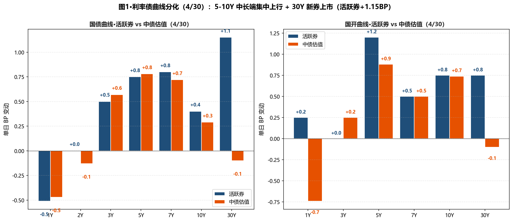
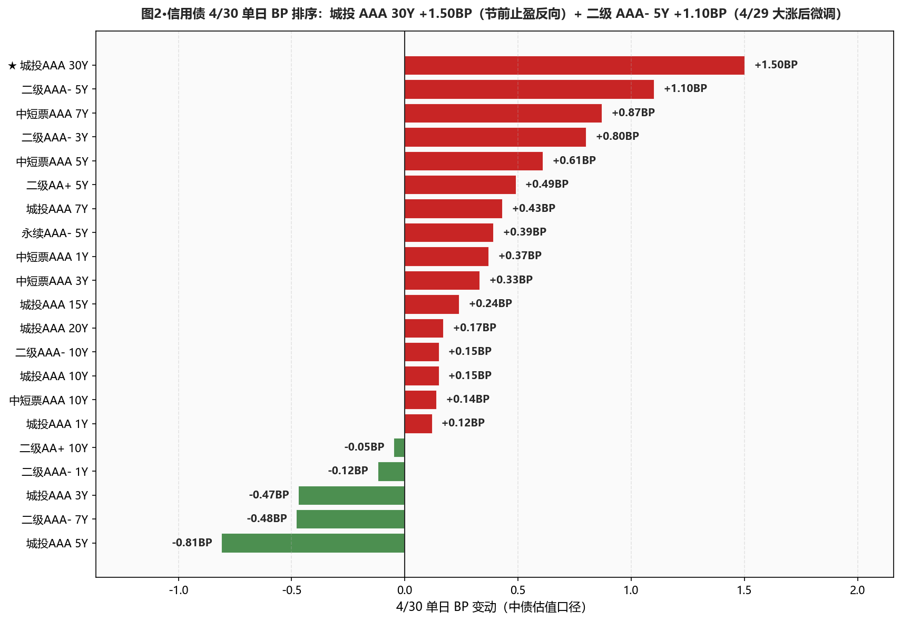
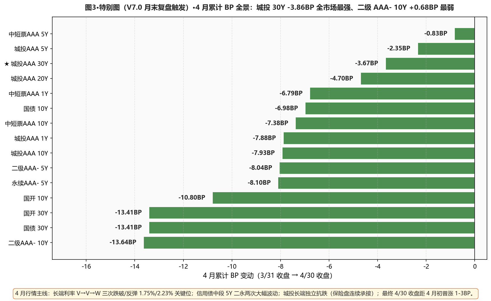

市场定性 长端节前止盈 + 跨月资金跳升 + 三重压制 + 30Y 换券—— 4 月 PMI 数据好于预期+深圳再次放松房地产限购+部分此前押注宽松的交易盘选择止盈三重压制； 国债期货全线下跌（30Y -0.26%/10Y -0.03%）；中长端国债中债估值 5Y +0.78BP / 7Y +0.72BP / 10Y +0.29BP / 20Y +0.90BP；30Y 国债中债估值微幅 -0.10BP（活跃券今日换券、新券 26超长特别国债02 上市首日 +1.15BP 报 2.2175%）； 城投 AAA 30Y +1.50BP 反向上行（连续 3 日独立抗跌后首次反向、节前止盈）； 二级资本债 AAA- 5Y +1.10BP / 3Y +0.80BP（4/29 大涨后微调）、7Y -0.48BP 仍坚挺； DR001 +8.11BP 跨月跳升至 1.3196%、DR007 +1.68BP 至 1.3897%（仍低 OMO 1.03BP）；央行 1262 亿净投放 1257 亿、加大跨月呵护；月末平稳度过。
- ⚠️ 长端利率债 维持小额建仓（不加速）4/29 试探建仓的 30Y 中债估值口径今日 -0.10BP 微动；新券口径 30Y 国债活跃券 2.2175%（距 2.23% 下方 1.25BP）；10Y 中债估值 1.7473%（距 1.75% 下方 0.27BP）——关键位仍在阈值附近、本日不加仓也不减仓、维持 4/29 试探建仓 3pct 不动；五一假期前观望节后市场反应
- ✅ 5Y 二级AAA- 持续加仓节奏4/29 三日累计 -3.51BP 后今日 +1.10BP 微调；3Y 二级 AAA- +0.80BP；周线累计 -1.25BP（4/27-4/30）仍是本周最强板块之一；本日不加仓节前观望、维持 28-30% 总仓位；7Y -0.48BP 表现坚挺、可作为下周继续扩仓方向
- ⚠️ 城投AAA 30Y 维持 15-20% 底仓（不动）连续 3 日独立抗跌后今日反向 +1.50BP（保险盘节前止盈）；30Y-10Y 城投利差 30.39 → 31.74BP（+1.35BP，反向走阔）距 25BP 目标位 6.74BP；等节后利差再次压缩到 25BP 以下时一次性建满 20%
- ❌ 警惕中短票 AAA 7Y 信号+0.87BP 是今日中短票最弱、连续两日承压；暂不加仓 7Y 中短票，等节后明确方向
- ⚠️ 杠杆维持 105-110% 跨节后再评估DR001 跨月 +8.11BP 至 1.3196%（与卖方共识"5 月才是边际回升观察窗口"对得上）；DR007 vs OMO 1.03BP（再收窄）、R-DR007 1.01BP 收窄到极窄；5/6 跨节后观察资金回归再决定回到 110-115%
- ① 30Y国债 vs 2.23% ○ 仍在下方：活跃券 2.2175%（下方 1.25BP，新券）/ 中债估值 2.2180%（下方 1.20BP）→维持 4/29 建仓不变；活跃券明确突破 2.23% 上方时确认止盈
- ② 10Y国债 vs 1.75% ○ 仍在下方：活跃券 1.7420%（下方 0.80BP）/ 中债估值 1.7473%（下方 0.27BP）→维持 4/29 加仓不变
- ③ R-DR007 利差 >15BP ○ 未触发：当前 1.01BP（-1.60BP）、距阈值 13.99BP→分层进一步收窄、资金面跨月平稳过渡
- ④ 10Y中短票AAA-3Y 利差 ≤25BP ○ 未触发：当前 45.69BP（-0.19BP）→仍宽、暂不切换
- ⑤ 30Y-10Y 城投AAA 利差 ≤25BP ○ 反向走阔：当前 31.74BP（+1.35BP）、距阈值 6.74BP→城投 30Y 节前止盈打断了三日逆势链；等节后再观察
A 段·详细数据
① 资金面 Wind EDB 实测
央行今日 7 天逆回购投放 1262 亿元（5 亿到期、净投放 1257 亿元）——较 4/29 的 259 亿/199 亿大幅放量、加大跨月呵护力度。Wind EDB 实测：DR001 1.3196%（+8.11BP，跨月跳升）、DR007 1.3897%（+1.68BP）、R001 1.3749%（+6.27BP）、R007 1.3998%（+0.08BP）；DR007 仍低 OMO 1.03BP（再收窄 1.68BP）；R-DR007 1.01BP（-1.60BP，分层进一步消失）；NCD 1Y 1.4450%（+0.25BP）。X-repo 隔夜 1.31%、资金供给不多；非银隔夜+7天 1.42%-1.43%、供给充足；月末基本平稳度过。
| 指标 | 4/29 (%) | 4/30 (%) | 变动 |
|---|---|---|---|
| DR001 | 1.2385 | 1.3196 | +8.11BP |
| DR007 | 1.3729 | 1.3897 | +1.68BP |
| R001 | 1.3122 | 1.3749 | +6.27BP |
| R007 | 1.3990 | 1.3998 | +0.08BP |
| NCD 1Y | 1.4425 | 1.4450 | +0.25BP |
| NCD 3M | 1.3750 | 1.3700 | -0.50BP |
| DR007 低于 OMO | 2.71BP | 1.03BP | -1.68BP |
| R-DR007 利差 | 2.61BP | 1.01BP | -1.60BP |
② 利率债 — 中债估值 中债估值 xlsx
中长端集中微涨：国债 5Y +0.78BP / 7Y +0.72BP / 20Y +0.90BP / 15Y +0.59BP；10Y 微涨 +0.29BP；30Y 微跌 -0.10BP（中债估值口径仍下行、活跃券今日换券、新券 +1.15BP）；国开同步微涨：5Y +0.88BP / 10Y +0.74BP / 30Y -0.10BP。30Y-10Y 期限利差 47.46 → 47.07BP（-0.39BP）。
| 品种 | 4/29 (%) | 4/30 (%) | BP |
|---|---|---|---|
| 国债 1Y | 1.1667 | 1.1620 | -0.47BP |
| 国债 2Y | 1.2565 | 1.2552 | -0.13BP |
| 国债 3Y | 1.2745 | 1.2802 | +0.57BP |
| 国债 5Y | 1.4710 | 1.4788 | +0.78BP |
| 国债 7Y | 1.6231 | 1.6303 | +0.72BP |
| 国债 10Y | 1.7444 | 1.7473 | +0.29BP |
| 国债 15Y | 2.0510 | 2.0569 | +0.59BP |
| 国债 20Y | 2.2170 | 2.2260 | +0.90BP |
| 国债 30Y | 2.2190 | 2.2180 | -0.10BP |
| 国开 1Y | 1.3765 | 1.3691 | -0.74BP |
| 国开 3Y | 1.5381 | 1.5406 | +0.25BP |
| 国开 5Y | 1.6280 | 1.6368 | +0.88BP |
| 国开 7Y | 1.7790 | 1.7840 | +0.50BP |
| 国开 10Y | 1.8306 | 1.8380 | +0.74BP |
| 国开 30Y | 2.3500 | 2.3490 | -0.10BP |
③ 利率债 — 活跃券 DM查债通
⚠️ 30Y 活跃券今日换券—— 老券"26附息国债02"（昨日 2.2400%）→ 新券"26超长特别国债02"+1.15BP 报 2.2175%（新券因票息/期限/久期略有差异、表观利率低 22.5BP）；10Y 国债"26附息国债05" +0.40BP 报 1.7420%（仍距 1.75% 下方 0.80BP）；10Y 国开"25国开20" +0.75BP 报 1.8575%。国债期货全线下跌：30Y 主连 -0.26% 报 113.050、10Y -0.03%、5Y -0.02%、2Y -0.01%。
| 品种 | 4/30 收盘 (%) | BP |
|---|---|---|
| 国债 1Y | 1.1600 | -0.51BP |
| 国债 3Y | 1.2750 | +0.50BP |
| 国债 5Y | 1.4350 | +0.75BP |
| 国债 7Y | 1.6230 | +0.80BP |
| 国债 10Y | 1.7420 | +0.40BP |
| 国债 30Y (新券26超长特别国债02) | 2.2175 | +1.15BP |
| 国开 5Y | 1.5960 | +1.20BP |
| 国开 7Y | 1.7400 | +0.50BP |
| 国开 10Y | 1.8575 | +0.75BP |
| 国开 30Y | 2.1075 | +0.75BP |
④ 信用债 — 中债估值 中债估值 xlsx
呈现"中段微涨 + 城投 30Y 节前止盈反向 + 二级 4/29 大涨后微调"格局： 城投 AAA 30Y +1.50BP 是今日最弱、连续 3 日独立抗跌后首次反向（保险盘节前止盈）； 城投 AAA 5Y -0.81BP 反向走强、3Y -0.47BP / AA+ 3Y -0.47BP 短端集中下行； 二级资本债 AAA- 5Y +1.10BP / 3Y +0.80BP（4/29 大涨后微调）、7Y -0.48BP 仍坚挺； 中短票 AAA 7Y +0.87BP 是中短票最弱（连续两日承压）。
| 品种 | 4/29 (%) | 4/30 (%) | BP |
|---|---|---|---|
| 中短票AAA 1Y | 1.5070 | 1.5107 | +0.37BP |
| 中短票AAA 3Y | 1.7164 | 1.7197 | +0.33BP |
| 中短票AAA 5Y | 1.8711 | 1.8772 | +0.61BP |
| 中短票AAA 7Y | 2.0375 | 2.0462 | +0.87BP |
| 中短票AAA 10Y | 2.1752 | 2.1766 | +0.14BP |
| 城投AAA 1Y | 1.5126 | 1.5138 | +0.12BP |
| 城投AAA 3Y | 1.7388 | 1.7341 | -0.47BP |
| 城投AAA 5Y | 1.8683 | 1.8602 | -0.81BP |
| 城投AAA 7Y | 2.0131 | 2.0174 | +0.43BP |
| 城投AAA 10Y | 2.2050 | 2.2065 | +0.15BP |
| 城投AAA 15Y | 2.3318 | 2.3342 | +0.24BP |
| 城投AAA 20Y | 2.4634 | 2.4651 | +0.17BP |
| ★ 城投AAA 30Y | 2.5089 | 2.5239 | +1.50BP |
| 二级AAA- 1Y | 1.5035 | 1.5023 | -0.12BP |
| 二级AAA- 3Y | 1.7716 | 1.7796 | +0.80BP |
| 二级AAA- 5Y | 1.9555 | 1.9665 | +1.10BP |
| 二级AAA- 7Y | 2.1552 | 2.1504 | -0.48BP |
| 二级AAA- 10Y | 2.2589 | 2.2604 | +0.15BP |
| 二级AA+ 5Y | 1.9964 | 2.0013 | +0.49BP |
| 二级AA+ 10Y | 2.2884 | 2.2879 | -0.05BP |
| 永续AAA- 5Y | 1.9807 | 1.9846 | +0.39BP |
B 段·今日关键事件
① 30Y 国债换券 — 老券"26附息国债02"→ 新券"26超长特别国债02"：上日上市便跻身活跃券的 26超长特别国债02 收益率今日 +1.15BP 报 2.2175%；老券因新券分流、活跃券交易转移到新券。本日开始 30Y 活跃券口径采用新券；本行 4/29 建仓的 30Y 利率债底仓需视新券价格调整加仓节奏。
② 三重压制驱动长端转上行：(1) 4 月 PMI 数据好于市场预期；(2) 深圳再次放松房地产限购政策；(3) 部分此前押注宽松的交易盘选择止盈。三重压制让长端从 4/29 的 V 形跌破反弹回到阻力位附近。
③ 月末跨月平稳度过：DR001 +8.11BP 跳升至 1.32% 但符合季节性；央行公开市场加大净投放（净投放 1257 亿，4/27-4/30 累计净投放约 4625 亿）；非银融入价差不大、供给充足；卖方共识"5 月才是边际回升真正观察窗口"得到验证。
④ 二级资本债延续承压：26中行/交行/工行二级资本债 01BC 收益率均上行超 1BP（与中债估值 +1.10BP 一致）。
⑤ 中信证券：存款搬家潜在空间十万亿级：金融市场多元发展、投资理财概念普及、居民部门资金再配置已成趋势；流出资金主要进入银行理财、保险等低波产品；"固收+"接受度提升。
C 段·重点可视化

图1·利率债曲线分化：5-10Y 中长端集中上行 + 30Y 新券上市

图2·信用债 4/30 单日 BP 排序：城投 AAA 30Y +1.50BP（节前止盈反向）

图3·特别图（V7.0 月末复盘）·4 月累计 BP 全景：城投 30Y -3.86BP 全市场最强、二级 AAA- 10Y +0.68BP 最弱